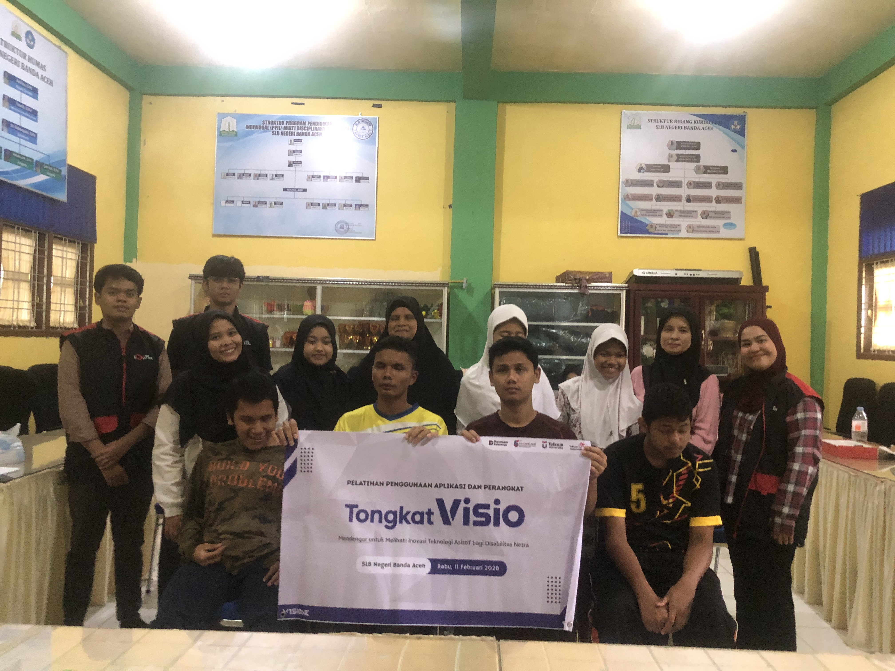
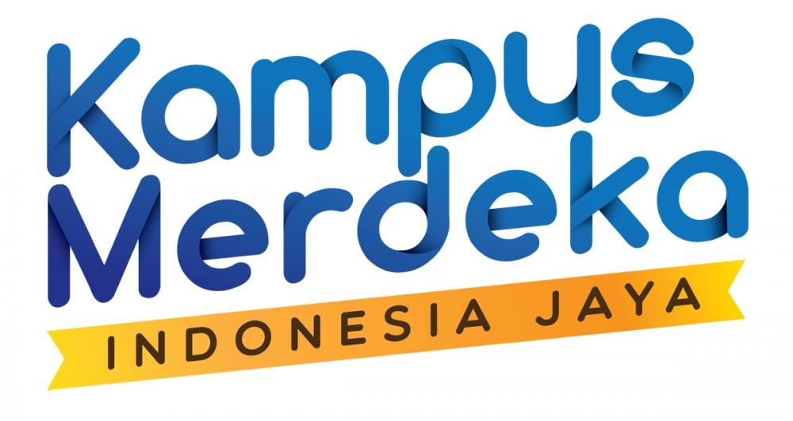
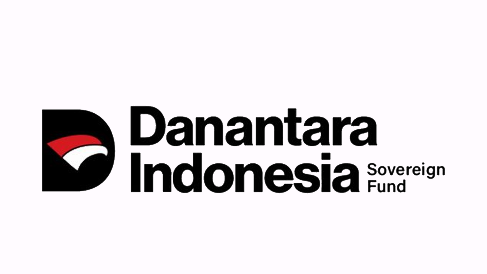
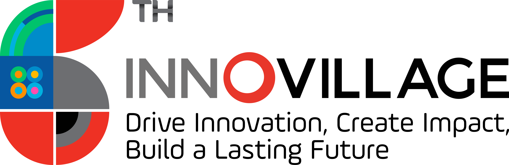

Kemandirian & Keamanan Mobilitas dengan Tongkat Visio
Mewujudkan masa depan inklusif di mana setiap siswa disabilitas netra melangkah dengan martabat dan kesempatan yang sama melalui teknologi asisten cerdas.

Tentang Tongkat Visio
TongkatVISIO merupakan pengembangan tongkat putih yang terintegrasi dengan teknologi kecerdasan buatan dan IoT untuk meningkatkan keamanan dan kemandirian mobilitas siswa disabilitas netra.
Peringatan Dini
Memberikan peringatan dini terhadap potensi risiko di lingkungan sekitar.
Pemahaman Ruang
Membantu pengguna memahami kondisi ruang melalui pengenalan objek yang akurat.

Navigasi mandiri dengan kecerdasan yang memahami lingkungan sekitar.
Galeri Video & Dokumentasi
Demo Produk & Sosialisasi
Sesi Pengenalan Produk dan Demo Tongkat bersama siswa disabilitas netra untuk mobilitas yang lebih baik.
Testimoni Pengguna
Feedback langsung dari Siswa dan Guru terkait penggunaan Tongkat Visio di lingkungan sekolah.
Mengapa Sensor Saja Tidak Cukup?
Mendefinisikan ulang perbedaan antara sekadar mendeteksi dan benar-benar memahami lingkungan.
Navigasi Defensif
Hanya mendeteksi jarak. Sensor ultrasonik tidak bisa membedakan antara pintu terbuka dan tertutup . Semua benda dianggap sebagai "halangan" dan tidak bisa mendeteksi lubang atau tangga menurun
-
close
Tanpa Konteks Semua dipersepsikan sebagai halangan
Navigasi Kontekstual
Mengetahui objek yang ada didepan apakah itu sesuatu yang harus dihindari atau justru dibutuhkan. mengenali meja, kursi, got, tangga naik/turun, pintu terbuka/tertutup, kendaraan, dan objek krusial lainnya. Memberi kemampuan bagi pengguna untuk mengambil keputusan mandiri.
-
done_all
Keputusan Mandiri Mengenali objek dengan Artificial Intelligence yang mengeluarkan suara
Fasilitasi untuk Pendamping
Aplikasi pendamping dirancang khusus bagi orang tua, pengasuh, dan guru untuk memfasilitasi monitoring dan manajemen perangkat. Sementera fitur navigasi AI bekerja mandiri bagi pengguna, ekosistem ini memberikan ketenangan bagi pendamping.
Monitoring Guru & Orang Tua
Memudahkan pengawas untuk memantau status perangkat dan lokasi pengguna demi keamanan tambahan di sekolah maupun di luar.
Laporan Aktivitas Harian
Dapatkan data riwayat penggunaan untuk membantu guru atau terapis mengevaluasi progres mobilitas harian siswa.
Konfigurasi Perangkat
Pengasuh dapat membantu mengatur preferensi audio (TWS) and level sensitivitas sensor sesuai kebutuhan spesifik pengguna.
Data Dampak Penggunaan
Analisis peningkatan kenyamanan dan kemandirian setelah penggunaan Tongkat Visio.
Rasa Aman
Keyakinan psikologis bernavigasi
Kemandirian
Mobilitas tanpa bantuan orang lain
Mitra Inovasi Kami





Mulai Langkah Mandiri Hari Ini
Jadilah bagian dari revolusi mobilitas inklusif. Hubungi tim kami untuk kemitraan atau pemesanan unit.